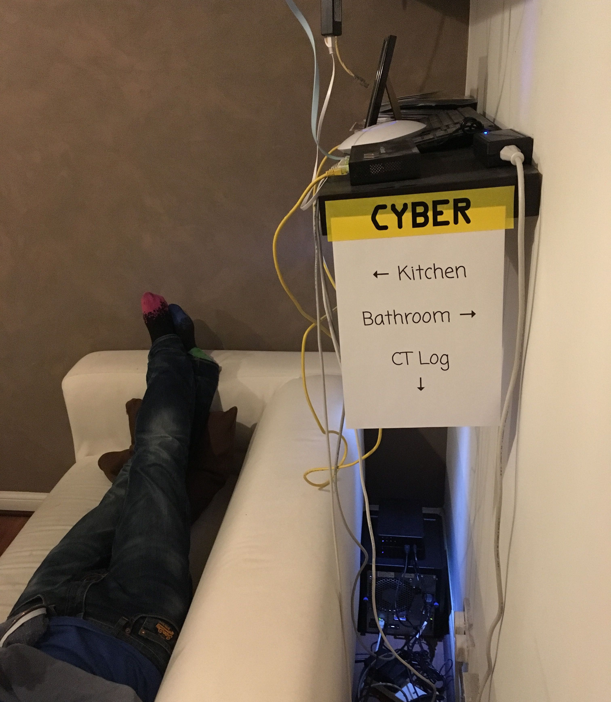

The "Behind The Sofa" CT Log

behindthesofa is an open Certificate Transparency log.
URL: https://ct.filippo.io/behindthesofa/
Log ID: sLeEvIHA3cR1ROiD8FmFu5B30TTYq4iysuUzmAuOUIs=
You can contact the operator via Mastodon.
behindthesofa is hosted at the Up in the Air Consulting Ltd headquarters, colocated with the BENJOJONET AS.
behindthesofa is only reachable over modern protocols, so insecure HTTP and IPv4 are not supported.
The log accepts non-expired chains issued by roots in the Java SE Root Certificate program.
The following monitors include behindthesofa:
Public key
-----BEGIN PUBLIC KEY----- MFkwEwYHKoZIzj0CAQYIKoZIzj0DAQcDQgAEWTmyppTGMrn+Y2keMDujW9WwQ8lQ HpWlLadMSkmOi4+3+MziW5dy1eo/sSFI6ERrf+rvIv/f9F87bXcEsa+Qjw== -----END PUBLIC KEY-----
Operational details
behindthesofa is powered by Trillian, which is still in development.
behindthesofa runs on an HPE ProLiant MicroServer Gen8 with OpenBSD 6.1, thanks to Go cross-compilation. 
Updates
Planned maintenance, outage post-mortems and change announcements happen on the log Twitter account.